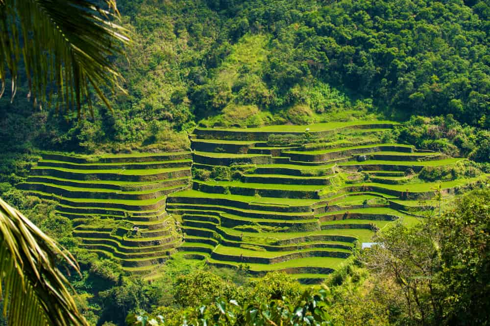
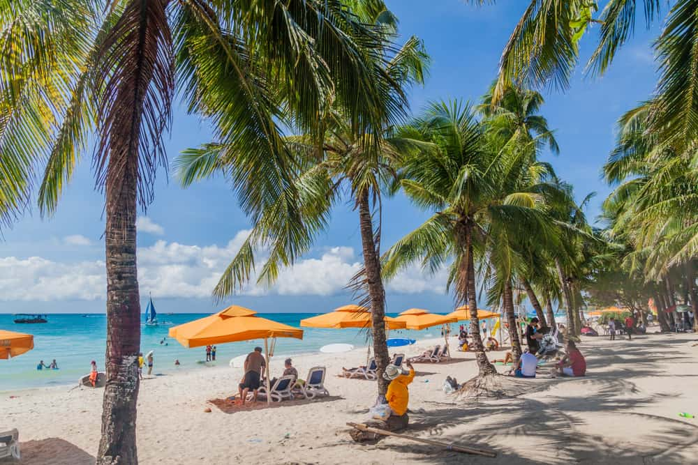
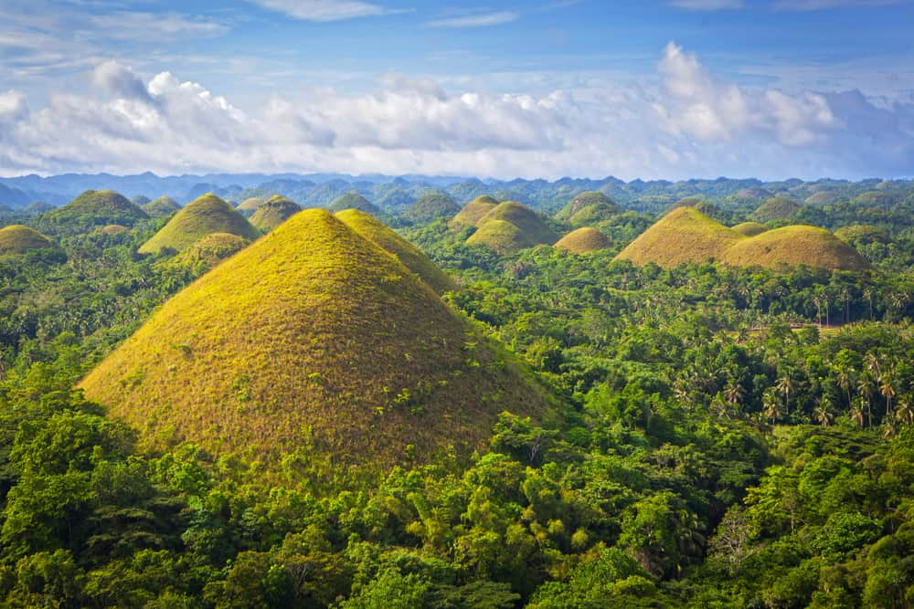
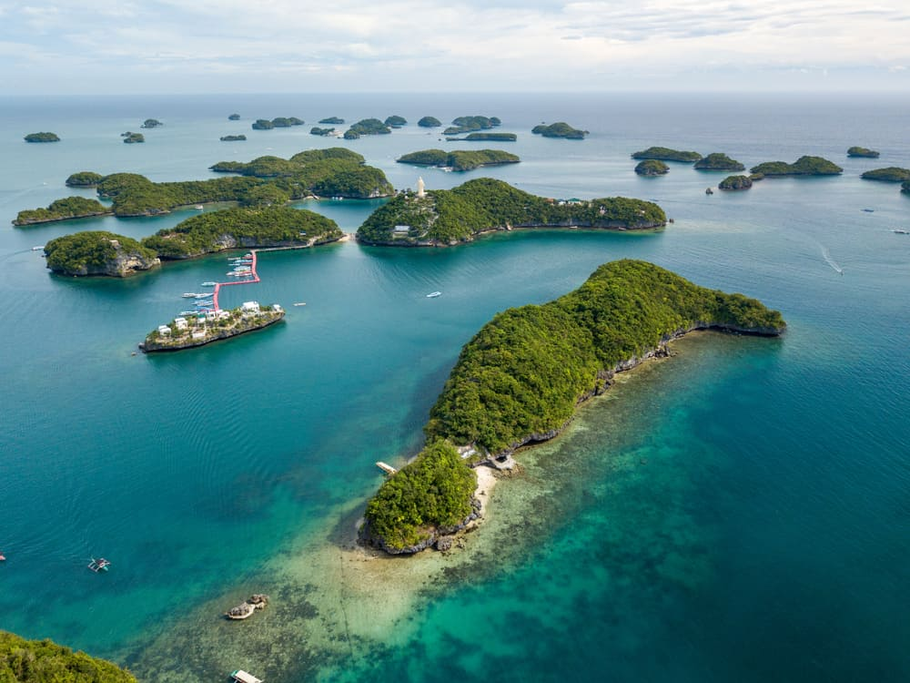
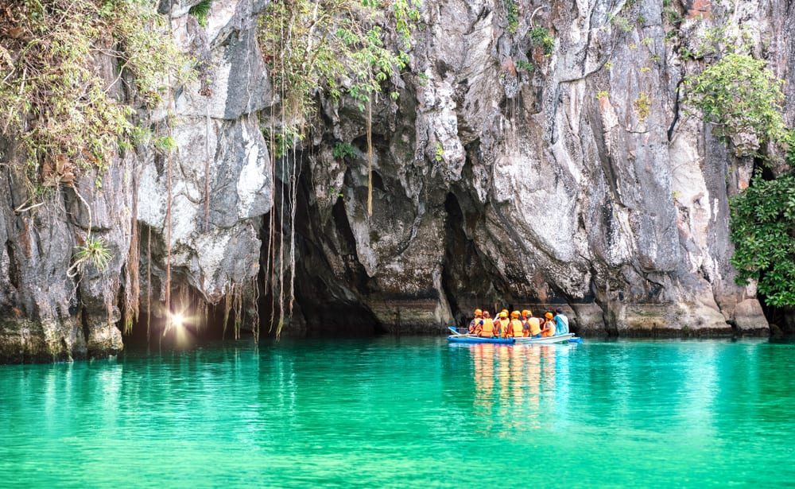
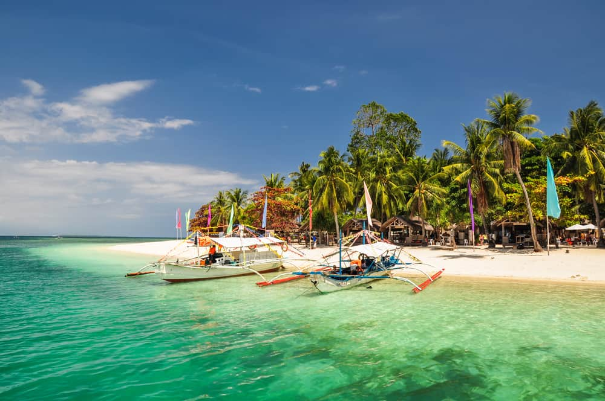
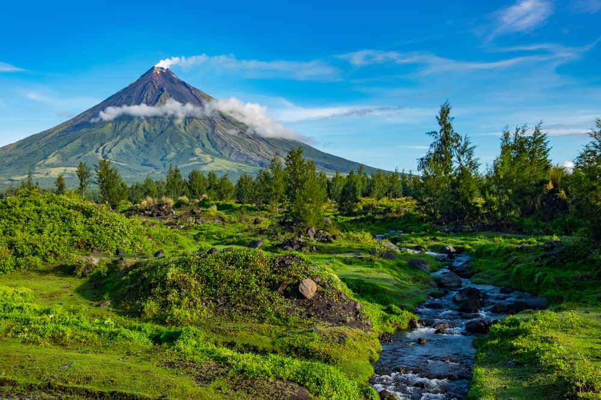

(Move your mouse to the image to see for the image to pop up)
Many people consider the Banaue Rice Terraces to be the “Eighth Wonder of the World” and it is easy to see why when you begin to look at their shear magnificence.
The island is only 7km in length and at its narrowest just 500m wide but people flock here for the outstanding beauty that the island offers. The main attraction is White Beach that has a 4km stretch of white sand that is surrounded by restaurants, hotels and diving shops.
The Chocolate Hills are in the Bohol Province of the Philippines and they are a rare and fascinating site to see. There are at least 1,260 hills spread out over an area covering approximately 20 square miles.
The Hundred Islands National Park in Alamino is full of great places to explore. You can rent an outrigger and go from one island to the next, there are some with caves or hills, some can be camped on, Governor’s Island even has houses you can rent.
The Puerto Princesa Underground River has been declared as one of the Seven Wonders of Nature. You can go for a ride on a paddle boat which is an excellent way to see the river and learn about the rock formations as well as the thousands of bats that live there.
If going for a complete dive is a step to far then maybe you could consider going snorkeling at Honda Bay. Located on the eastern shore of Palawan the waters are often full of starfish (Starfish Island) and they make for a beautiful view as you gently snorkel through the calm waters.
The volcano has picked up the nickname “Perfect Cone” due to its symmetrical cone shape. There are frequent eruptions at the volcano which lead to large evacuations of the neighboring towns as the ash and mud rains down on the people below.
Source: The Crazy Tourist
"I lived in the Philippines until I was 16, and moved here in the USA afterwards. There are a lot of things I miss in my home country and still a lot to explore."